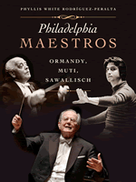

<body bgcolor="#FFFFFF" text="#000000" link="#0000FF" vlink="#CC0000" alink="#CC0000"><center><hr width="350" size="1" align="center" noshade>The story of the Philadelphia Orchestra told through three of its greatest conductors<hr width="350" size="1" align="center" noshade><p><a href="https://cdcshoppingcart.uchicago.edu/Cart/ChicagoBook.aspx?ISBN=9781592134878&&PRESS=temple" target="_top">Buy this book!</a> | <a href="https://cdcshoppingcart.uchicago.edu/Cart/Cart.aspx?PRESS=temple" target="_top">View Cart</a> | <a href="https://cdcshoppingcart.uchicago.edu/Cart/Cart.aspx?PRESS=temple" target="_top">Check Out</a></p><p></p></center><!--none//--><h1>Philadelphia Maestros</h1>
<H2>Ormandy, Muti, Sawallisch</H2>
<h3>Phyllis White Rodr�guez-Peralta</h3>
<P>cloth 1-59213-487-4 $35.50, Mar 06, <FONT COLOR=#990033>Available</FONT>
<br>Electronic Book 1-59213-489-0 $35.50 <FONT COLOR=#990033>Available</FONT>
<BR> 192 pp
6x8
11&nbsp;halftones
</P><BLOCKQUOTE><I>"The author's affection and good cheer can be felt on every page.... [She] has gathered most of the relevant information after perusing archival materials and conducting a few interviews, and has set it all out in a diverting manner.... Rodriguez-Peralta manages to draw three very distinct artists and personalities."</i>
<br>&#151;<b><i>The Jewish Exponent</i></b><i></I></BLOCKQUOTE>
<p>Over the past century, the Philadelphia Orchestra has earned its reputation as one of the finest orchestras in the world. Philadelphia Maestros tells the tale of this marvelous orchestra through the tenures of three conductors: Eugene Ormandy, Riccardo Muti, and Wolfgang Sawallisch. With their singular approaches to sound and public image, all three maestros left an indelible mark on the Orchestra, and the cultural life of the city of Philadelphia.
<p>A lifelong fan and scholar of the Philadelphia Orchestra, Phyllis White Rodr�guez-Peralta paints intimate portraits of the conductors using archival material and interviews with musicians, including pianists Gary Graffman and Lang Lang, and violinist Sarah Chang. Rodr�guez-Peralta's text captivates as she recounts Eugene Ormandy's performance as a last-minute substitute for guest conductor Arturo Toscanini; Riccardo Muti's magnetic presence and international fame; and the role of Wolfgang Sawallisch in moving the Orchestra to its grand new hall at the Kimmel Center.
<p>Engaging and entertaining, <i>Philadelphia Maestros</i> will be a welcome addition to any aficionado's bookshelf.
<BR>&nbsp;<h2>Excerpt</h2><P>Excerpt available at <a href="http://www.temple.edu/tempress">www.temple.edu/tempress</a></p>
<BR>&nbsp;<h2>Reviews</h2>
<p><i>"Phyllis White Rodr�guez-Peralta...gives us affectionate portraits of the last three directors of the Philadelphia Orchestra."</i>
<br>&#151<b><i>The Philadelphia City Paper</i></b>
<BR>&nbsp;<h2>Contents</h2><P>
<p>Preface
<br>A Note on Sources
<br>Acknowledgments
<br>1. Eugene Ormandy
<br>2. Riccardo Muti
<br>3. Wolfgang Sawallisch
<br>4. Voices from the Music World
<br><i>Gary Graffman, Lang Lang, Sarah Chang</i>
<br>Notes
<br>Selected Bibliography
<br>Index
</P><BR>&nbsp;<H2>About the Author(s)</H2>
<table><tr><td valign="top"><img src="/tempress/authors/1845_au.gif" height="90" width="75"></td><td width="100%" valign="middle"><p><b>Phyllis White Rodr�guez-Peralta</b> is an Emeritus Professor of Temple University, formerly the Chair of the Department of Spanish and Portuguese. She is the author of <i>Jose Santos Chocano: An Analysis of His Works</i> and <i>Tres Poetas Cumbres en la Poes�a Peruana</i>.</P></td></tr></table>
<BR><H2>Subject Categories</H2>
<p><A HREF="/tempress/philly.html" TARGET="_top">Philadelphia Region</a>
<BR><A HREF="/tempress/music.html" TARGET="_top">Music and Dance</a>
<BR><A HREF="/tempress/general.html" TARGET="_top">General Interest</a>
</p>
<p align="center"><a href="https://cdcshoppingcart.uchicago.edu/Cart/ChicagoBook.aspx?ISBN=9781592134878&&PRESS=temple" target="_top">Buy this book!</a> | <a href="https://cdcshoppingcart.uchicago.edu/Cart/Cart.aspx?PRESS=temple" target="_top">View Cart</a> | <a href="https://cdcshoppingcart.uchicago.edu/Cart/Cart.aspx?PRESS=temple" target="_top">Check Out</a></p><p><font face="Arial" size="1"><a href="copyright.html" onMouseOver="window.status='Web Copyright Policy';return true;" onMouseOut="window.status=''" title="Web Copyright Policy">&copy;</a> 2015 <a href="http://www.temple.edu" target="new" onMouseOver="window.status='Link to Temple University home page';return true;" onMouseOut="window.status=''" title="Link to Temple University home page">Temple University</a>. All Rights Reserved. http://www.temple.edu/tempress/titles/1845_reg.html</font></p>